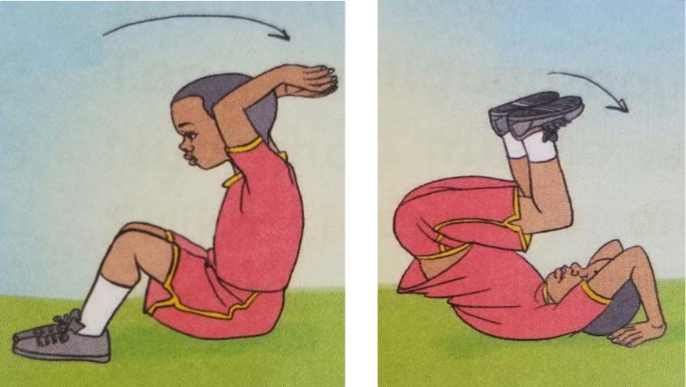
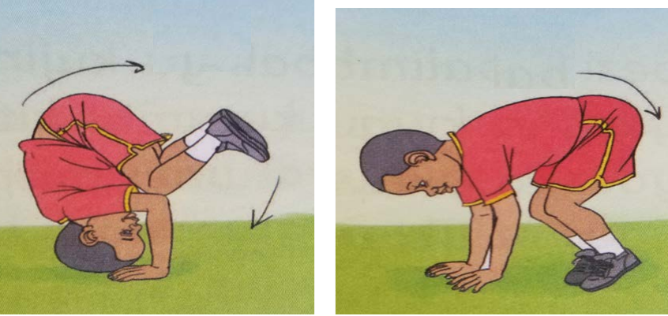
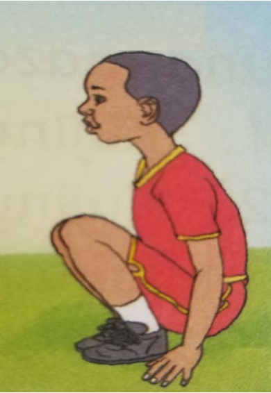

Kujiviringisha kwa kurudi nyuma
Hatua za kufuata
1. Kaa chini na uelekeza mikono kisogoni.
2. Jilaze kwa mgongo na inua miguu juu.

Picha mbili zinaonesha mwanafunzi akiketi na kuelekeza mikono kisogoni, kisha akijilaza kwa mgongo na kuinua miguu juu.3. Jisukume kwenda nyuma.
4. Tua kwa kutanguliza miguu.

Picha mbili zinaonesha mwanafunzi akijisukuma kwenda nyuma na kutua kwa kutanguliza miguu.5. Shusha kiuno uchuchumae.

Mwanafunzi ameshusha kiuno na amechuchumaa, mikono ikigusa chini.6. Rudia kufuata hatua hizi.
Zoezi la 5
Zoezi la tanoShughuli ya kufanya 10
Shughuli ya kufanya ya kumiFanya zoezi la kujiviringisha kwa kwenda nyuma.
85